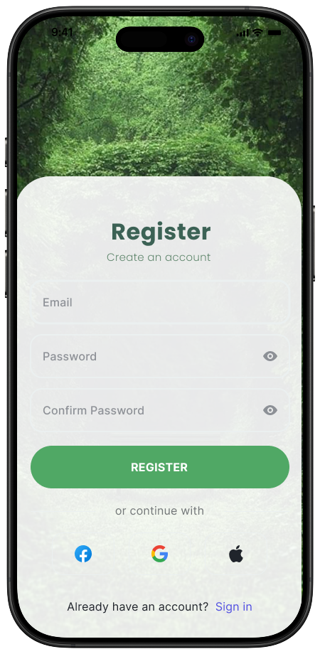

Plant Shop.
Plant care, community and day-to-day tracking in one mobile experience.
MOBILE APP INTERFACES10 supplied screenshotsFrontend & UI Design
FINAL INTERFACE SHOWCASEA connected set of mobile screensScroll for the full screenshot collection ↓

01 / DESIGN CONTEXTProject at
Project at
a glance.
A selected set of mobile screens for plant care, plant swapping, community interaction and store checking.
02 / SELECTED SCREENSExplore the
Explore the
interfaces.
The screenshots below are presented as final design / interface views. Select any image to inspect it at full size; use the arrow keys to navigate.
03 / VIDEO WALKTHROUGHExperience the
Experience the
interface.
A short walkthrough of selected Plant Shop interface screens.
04 / VISUAL FOCUSWhat the
What the
screens show.
Ten selected app screens showing account entry, plant swapping, store checking, community browsing and plant care workflows.
Onboarding & account screensSwapping Plants PageCommunity feed and post pagesOnline Store Checker, plant care and tasks
Selected UI sections only. The complete interfaces and internal details are not shown to respect company and client confidentiality.